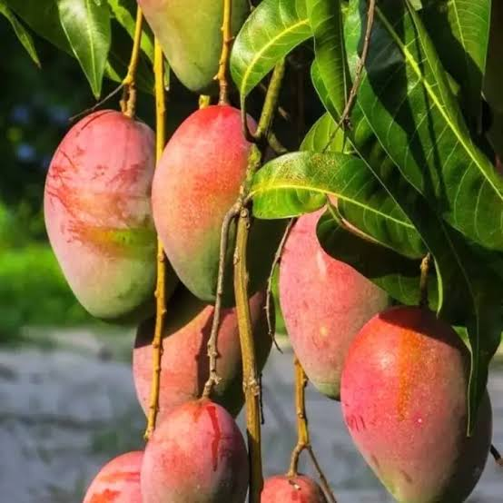
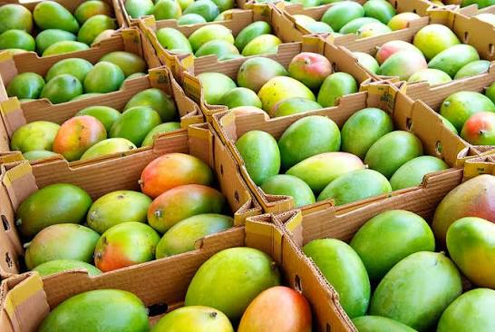

Mango Production
Usually covers around 1/2 acres of the farm.

- Time to fruit: 3-6 years(grafted).
- Varieties: We mainly grow Apple Mango.We also have some Tommy Atkins variety.
- Soil Type: Deep, Well-Drained sandy loam,pH 5.5-7.5.
- Spacing: 9-12 m between trees.
- Fertilizer: Organic manure,NPK and foliar sprays.
- Watering:Deep watering in dry seasons
Farm Gallery


